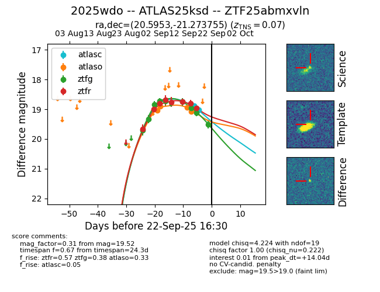
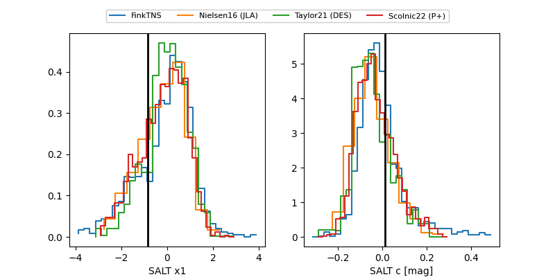

FINK: ZTF25abmxvln
Lasair: ZTF25abmxvln
ALeRCE: ZTF25abmxvln
TNS: 2025wdo
YSE: 2025wdo
ZTF25abmxvln (ztf,fink)
2025wdo (tns,yse)
ATLAS25ksd (atlas)
equatorial (ra, dec) = (20.5953,-21.27376)
galactic (l, b) = (174.8933,-80.83599)


last atlasc=19.02, atlaso=19.09, ztfg=19.52, ztfr=18.96
2 atlasc, 4 atlaso, 9 ztfg, 8 ztfr detections